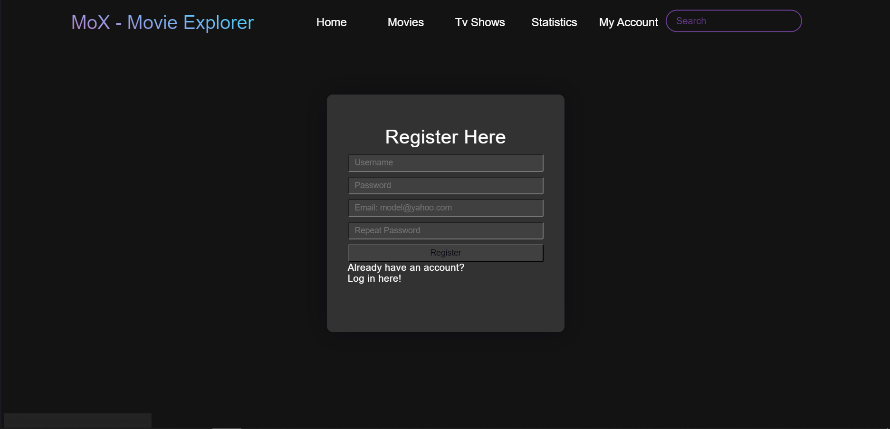

Authors
-
Dulhac Alexandru
-
Constantinescu Stefania-Bianca
1.1 Scopul documentului
Scopul acestui document este sa prezinte o descriere detaliata a aplicatiei MoX. Acesta va explica scopul si functionalitatile aplicatiei, interfata aplicatiei si constrangerile acesteia.
1.2 Scopul Produsului
MoX a fost dezvoltat cu scopul de a ajuta oamenii sa caute filme pe baza unor criterii alese.
Aplicatia ofera posibilitatea de a cauta filme dupa nume (intr-un search bar), categorie, platforma de streaming pe care este disponibil filmul cautat.
De asemenea, MoX permite vizitatorilor website-ului sa caute filme, sa se inregistreze/logheze si sa salveze filmele pe care deja le-au vizionat. Utilizatorii logati pot sa vada statistici ce pot fi exportate in diferite formate (CSV, SVG, WebP ).
In plus, aplicatia prezinta diferite statistici precum: "Top 5 directori dupa suma lungimii tuturor filmelor", "Cum a evoluat distributia de filme horror intre Netflix si Disney+?" etc.
2.1 Functionalitatile produsului
Cateva dintre functionalitatile oferite de acest website sunt:
- Login/Logout
- Register
- Navigare filmelor/serialelor fara autentificare
- Filtrarea filmelor/serialelor in functie de caterogia din care fac parte
- Ordonarea filmelor in functie de criterii precum: "Most/Least Viewed","Highest/Lowest Rated","Newest/Oldest" etc.
- Vizualizare statisticilor si descarcare acestora in format CSV,WebP,SVG
- Functionalitati accesate de utilizatorii logati:
- Adaugare de filme/seriale in lista de favorite
2.2 Back-end
Parte de back-end implementeaza, prin intermediul unei adaptari OOP, functii care sa indeplineasca functionalitatile afisate pe website.
2.3 Baze de date
Baza de date are functionalitatea de a stoca informatiile care descriu obiectele care sunt utilizate in aplicatia MoX si sa surprinda relatiile dintre aceste obiecte.
2.4 Mode de organizare cod - MVC
Codul aplicatiei Web este strucutrat utilizand arhiterctura MVC, astfel
- Modulul "View" contine codul HTML, CSS si doar codul NodeJS necesar pentru a comunica cu celelalte , aceste reprezentand parte care construieste ceea ce este vizibil utilizatorului pe site.
- Modulul "Model" contine clasele si metodele care comunica cu Baza de date.
- Modulul "Controller" cuprinde codul care reprezinta implementare functionalitatilor oferite de aplicatie.
2.5 Categorii de utilizatori
- Guest: simplu vizitator al site-ului ce nu poate accesa toate facilitatile site-ului.
- User: utilizator cu un cont creat si stocat in baza de date ce poate accesa toate facilitatile site-ului
2.6 Mediu de operare
Fiind o aplicatie Web, MoX poate fi utilizata in orice browser ce rulează HTML, CSS, JS, netinand cont de o versiune anume a sistemului de operare a device-ului pe care ruleaza aplicatia.
3. Page Functionality and Usage
3.2 Home-page
Utilizatorul conectat poate cauta filme/seriale utilizand bara de cautare si poate accesa toate celelalte pagini ale aplicatiei.
- Search section: utilizatorul poate cauta un produs cu ajutorul unui search bar sau poate selecta o categorie de filme/seriale.
- Login: buton ce te redirectioneaza catre pagina de log in
- Apasand pe imaginea oricarui film, utilizatorul v-a fi redirectionat catre pagina acelui film.
- De asemenea utilizatorul are optiunea de a filtra filmele in functie diverste criterii.

3.3 SignUp page
Vizitatorul aplicatiiei Web poate sa isi creeze un cont, completand formularul necesar, dupa care va fi conectat la nou cont si redirectionat catre pagina principala.
- Create account: utilizatorul creeaza un cont nou folosind date valide, iar apoi este redirectionat catre home page.
- De asemenea utilizatorul poate apasa pe "Log in here!" pentru a fi redirectonat catre pagina de log in.

3.4 Login page
Vizitatorul, care are deja un cont, poate completa informatiile valide in fomularul de conectare, dupa aceasta va fi redirectionat catre pagina principala (Home Page).
- Login form: utilizatorul se conecteaza la un cont deja existent folosind date valide, iar apoi este redirectionat catre home page
- De asemenea utilizatorul poate apasa pe "Sign here!" pentru a fi redirectonat catre pagina de Sign in.
3.4 Movie page
Vizitatorul poate citi detaliile despre filmul selectat, si de asemenea il poate adauga ca "favorit" apasand butonul.
- Add to Favourites: utilizatorul poate adauga filmul la lista de favorite
4.1 Front-end Technologies
Pentru realizarea Front-end-ului au fost utilizate: HTML, CSS, JavaScript si protocolul HTTP pentru comunicare cu Back-end-ul.
4.2 Back-end Technologies
Pentru realizarea Back-end-ului a fost utilizat NodeJS si protocolul HTTP pentru comunicare cu Front-end-ul.
4.3 Database technologies
Crearea bazei de date a fost realizate prin intermediul SGBD-ului MySQL existent in NodeJS
6.1 Contributii
- Dulhac Alexandru
- Mockup-uri
- Documentatie
- Frontend
- Backend
- Populare Bazei de date
- Ghid de utilizare
- Constantinescu Stefania-Bianca
- Mockup-uri
- Documentatie
- Frontend
- Backend
- Design si crearea bazei de date
- Ghid de utilizare